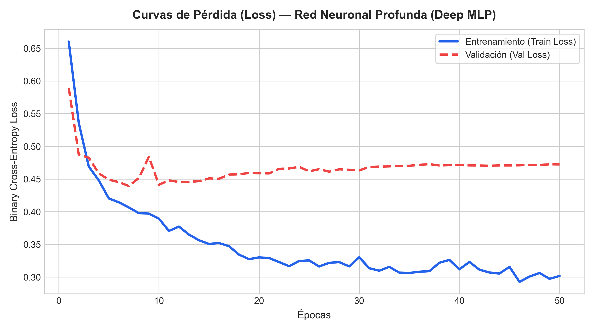
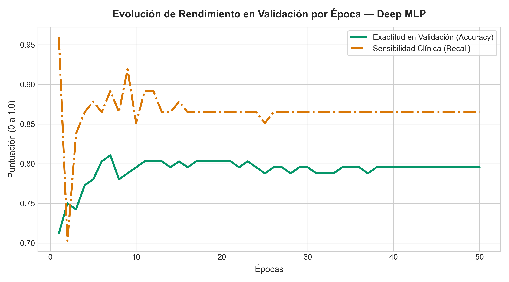
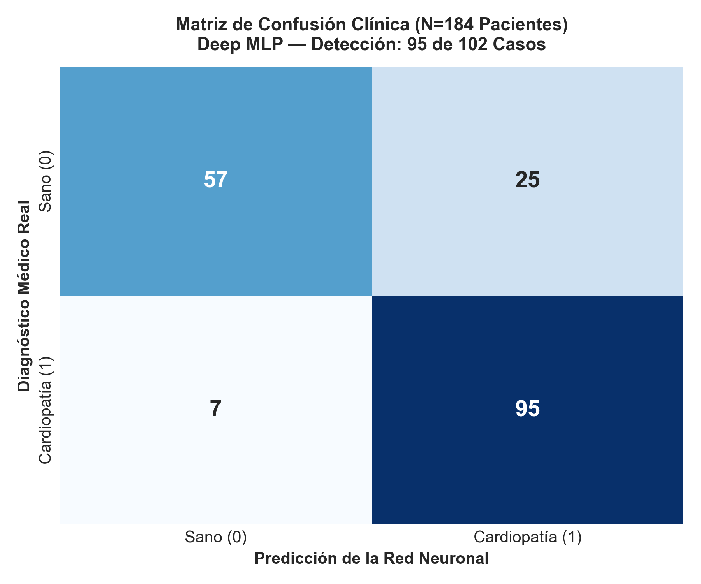
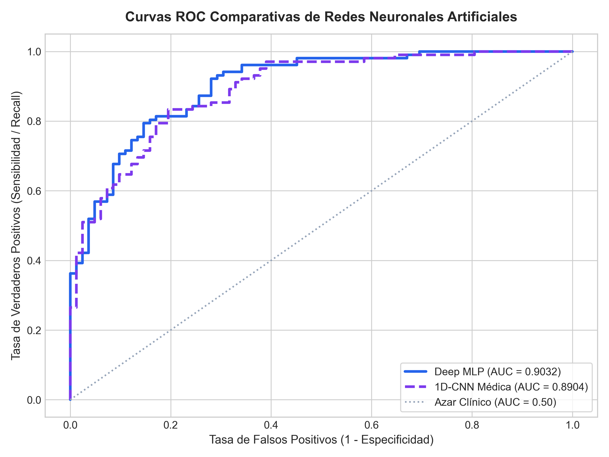
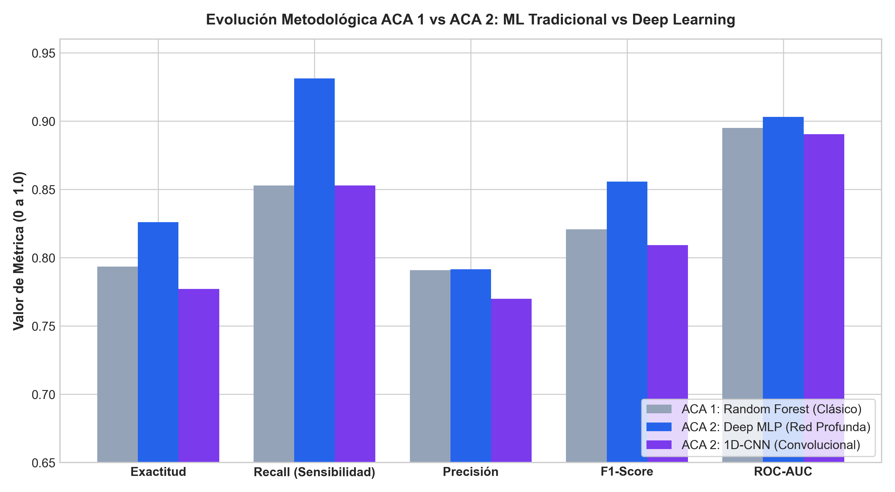

×

Código modular, hiper-comentado y 100% reproducible en Google Colab con el flujo completo de los 5 pasos metodológicos.
cardiopredict.db), inserción de 918 pacientes y queries analíticas.Interfaz médica en producción conectada a las Redes Neuronales serializadas con selector de arquitectura e inferencia en tiempo real.
cardiopredict.db.Infografía científica estructurada con planteamiento del problema, ruta en 5 pasos, diagramas de capas de la red neuronal y normas APA 7.
Sustentación técnica oficial de 4 minutos conducida por Johan Smith Valderrama en representación del equipo de investigación CUN.





| Paso Oficial | Fase del Proyecto | Descripción Técnica Implementada | Acceso Directo |
|---|---|---|---|
| Paso 1 | Exploración y Gestión SQL | Almacenamiento de 918 pacientes en base de datos SQLite (cardiopredict.db) con consultas de prevalencia y correlación de dolor torácico. |
Ver SQL en la App |
| Paso 2 | Pipeline & Data Augmentation | Pipeline scikit-learn con ColumnTransformer, imputación por medianas clínicas y aumento de datos estocástico (+20% muestras sintéticas). | Ver en Cuaderno |
| Paso 3 | Modelado con Redes Neuronales | Implementación en PyTorch de Deep MLP (64-32-16 con Dropout) y Red Convolucional 1D-CNN para biomarcadores clínicos. | Ver Arquitecturas |
| Paso 4 | Evaluación & Curvas de Loss | Monitoreo de curvas de pérdida BCE, evaluación sobre 184 pacientes de prueba, sensibilidad del 93.14% y ROC-AUC del 90.32%. | Ver Comparativa |
| Paso 5 | Despliegue Interactivo Streamlit | Interfaz clínica en la nube con semáforo de triaje, ajuste de umbral de decisión, recomendaciones AHA/ACC y consola SQL integrada. | Probar en Producción |